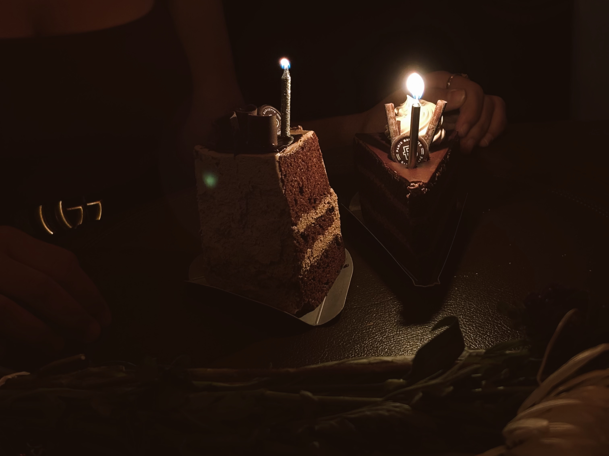
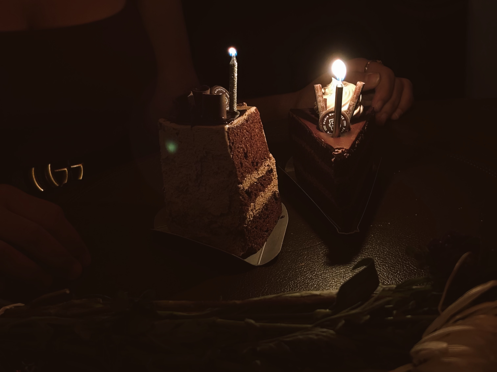

still dreaming
sunday started slow. i woke up still thinking about the sunset i saw at pebble beach in dumbo the evening before. that spot always feels like a pause button. it’s quiet, soft, and makes me forget how loud the city can be. on saturday, i stopped by foot locker for some retail therapy and finally got the burgundy sneakers i wanted. they made me happy. i spent the night in brooklyn listening to my playlist that carried into sunday. by the afternoon, i had them on my feet, walking through central park with no real plan, just letting the day move at its own pace.


 
